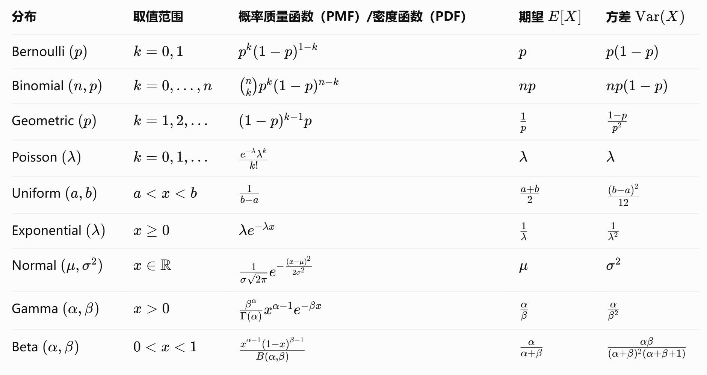
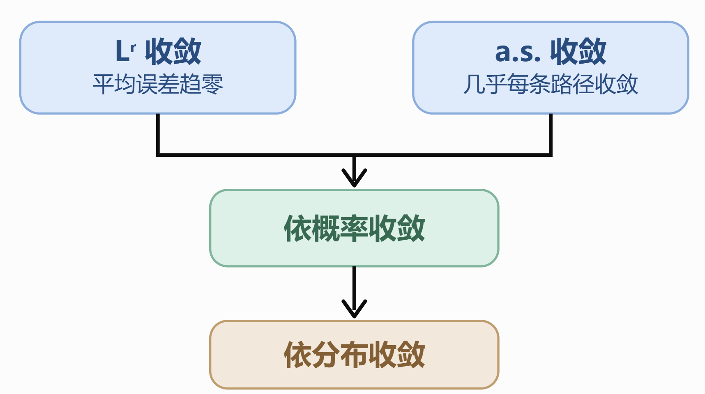
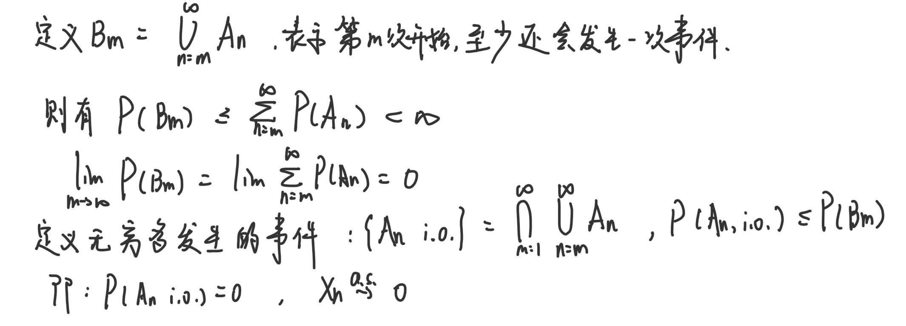
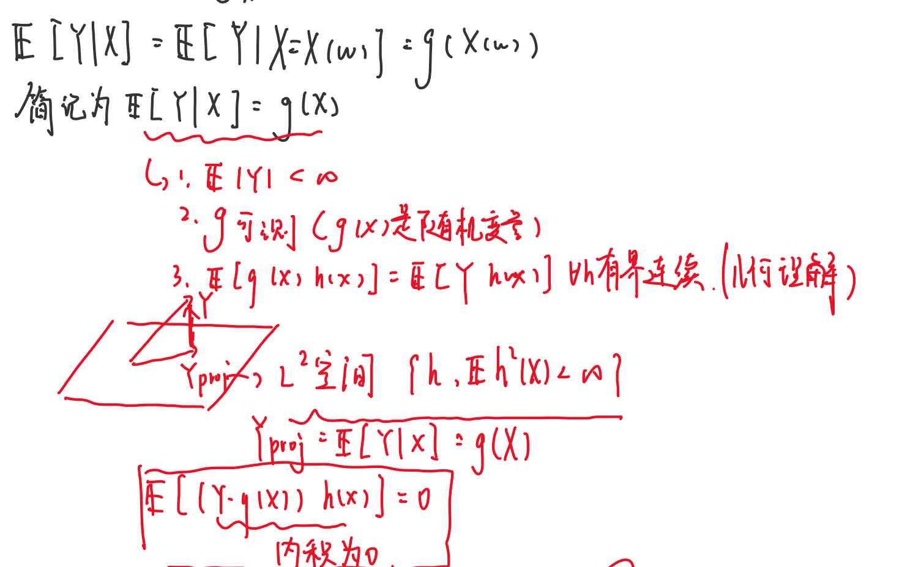

一、概率论基础
1.1 概率空间与 \(\sigma\)-代数
- 概率空间 \((\Omega,\mathcal F,\mathbb{P})\)：\(\Omega\) 是所有可能结果组成的样本空间；\(A\subseteq\Omega\) 是事件，可赋予概率的事件属于事件域 \(\mathcal F\)；\(\mathbb{P}:\mathcal F\to[0,1]\) 是概率测度。
- \(\sigma\)-代数（事件域）的三个条件：
① \(\Omega\in\mathcal F\)
② \(A\in\mathcal F\Rightarrow A^c\in\mathcal F\)
③ \(A_n\in\mathcal F\ (n\ge1)\Rightarrow\bigcup_{n=1}^\infty A_n\in\mathcal F\)（由此也对可数交封闭，且 \(\varnothing\in\mathcal F\)）
直观理解， \(\sigma\)-代数是我们允许讨论和赋予概率的一组事件的集合，是一套对取补、可数并等事件运算封闭的事件系统。
- 生成 \(\sigma\)-代数：\(\sigma(\mathcal C)=\bigcap\{\mathcal G:\mathcal G\text{ 是包含 }\mathcal C\text{ 的 }\sigma\text{-代数}\}\)，即包含 \(\mathcal C\) 的最小 \(\sigma\)-代数。
- Borel \(\sigma\)-代数：\(\mathcal B(\mathbb R)=\sigma(\{(a,b):a
\(\mathcal B(S)\) 是空间 \(S\) 中所有开集生成的 \(\sigma\)-代数。
1.2 概率运算、条件概率与独立性
① \(\mathbb{P}(A)\ge0\)
② \(\mathbb{P}(\Omega)=1\)
② 两两不交的 \(A_n\) 满足 \(\mathbb{P}(\bigcup_n A_n)=\sum_n\mathbb{P}(A_n)\)
推论：\(\mathbb{P}(A^c)=1-\mathbb{P}(A)\)，\(A\subseteq B\Rightarrow \mathbb{P}(A)\le \mathbb{P}(B)\)。
- 加法与容斥：\(\mathbb{P}(A\cup B)=\mathbb{P}(A)+\mathbb{P}(B)-\mathbb{P}(A\cap B)\)
\(\mathbb{P}(\bigcup_{i=1}^nA_i)=\sum_{\varnothing\ne J\subseteq\{1,\ldots,n\}}(-1)^{|J|+1}\mathbb{P}(\bigcap_{j\in J}A_j)\)
- 条件概率与乘法：\(\mathbb{P}(A\mid B)=\mathbb{P}(A\cap B)/\mathbb{P}(B)\)，要求 \(\mathbb{P}(B)>0\)；
若 \(B_1,\ldots,B_n\) 构成划分且 \(\mathbb{P}(B_i)>0\)，则 \(\mathbb{P}(A)=\sum_i\mathbb{P}(A\mid B_i)\mathbb{P}(B_i)\)。
- 事件独立：\(A,B\) 独立当且仅当 \(\mathbb{P}(A\cap B)=\mathbb{P}(A)\mathbb{P}(B)\)。
事件族 \(\{A_i\}\) 相互独立指任意有限个不同下标 \(i_1,\ldots,i_k\) 均满足 \(\mathbb{P}(\bigcap_{j=1}^kA_{i_j})=\prod_{j=1}^k\mathbb{P}(A_{i_j})\)；仅两两独立不够。
- \(\sigma\)-代数独立：\(\mathcal G_1,\ldots,\mathcal G_n\) 独立，指任取 \(A_i\in\mathcal G_i\)，\(\mathbb{P}(\bigcap_iA_i)=\prod_i\mathbb{P}(A_i)\)；无限族要求每个有限子族都独立。随机变量独立等价于它们生成的 \(\sigma\)-代数独立。
1.3 随机变量与分布
\(X:\Omega\to\mathbb R\) 是随机变量，当且仅当 \(\{X\le x\}\in\mathcal F\) 对每个 \(x\in\mathbb R\) 成立；
等价于 \(X^{-1}(B)\in\mathcal F\) 对每个 \(B\in\mathcal B(\mathbb R)\) 成立
\(\sigma(X)=\{X^{-1}(B):B\in\mathcal B(\mathbb R)\}\)
可测性保证随机变量对应的事件可以被赋予概率，而 \(\sigma(X)\) 则描述这个随机变量包含了多少信息。
- 分布函数：\(F_X(x)=\mathbb{P}(X\le x)\)
① 单调不减、右连续
② \(F_X(-\infty)=0\)、\(F_X(+\infty)=1\)
③ \(\mathbb{P}(a
④ \(\mathbb{P}(X=x)=F_X(x)-F_X(x^-)\)

Notion image
- \(\Gamma(\alpha)=\int_0^\infty t^{\alpha-1}e^{-t}\,dt\)，且 \(\Gamma(\alpha+1)=\alpha\Gamma(\alpha)\)（\(\alpha>0\)）。
- \(\Gamma(\alpha) = (\alpha-1)! \quad \alpha \in \mathbb{N}^+\)
- \(\Gamma(\frac{1}{2}) = \sqrt{\pi}\)
- \(B(\alpha,\beta) =\int_0^1 t^{\alpha-1}(1-t)^{\beta-1}\,dt = \frac{\Gamma(\alpha)\Gamma(\beta)}{\Gamma(\alpha+\beta)}\)
1.4 多维随机变量与条件分布
- 随机向量 \(\boldsymbol X=(X_1,\ldots,X_n)\) 的联合分布函数
\(F_{\boldsymbol X}(x_1,\ldots,x_n)=\mathbb{P}(X_1\le x_1,\ldots,X_n\le x_n)\)。
边缘分布由其他坐标令趋于 \(+\infty\) 得到；二维情形 \(F_X(x)=\lim_{y\to\infty}F_{X,Y}(x,y)\)
\(\mathbb{P}((X,Y)\in C)=\iint_C f_{X,Y}(x,y)\,dx\,dy\)
\(f_X(x)=\int_{\mathbb R}f_{X,Y}(x,y)\,dy\)
\(f_Y(y)=\int_{\mathbb R}f_{X,Y}(x,y)\,dx\)
离散型 \(\mathbb{P}(X=x\mid Y=y)=p_{X,Y}(x,y)/p_Y(y)\)，要求 \(p_Y(y)>0\)
连续型 \(f_{X\mid Y}(x\mid y)=f_{X,Y}(x,y)/f_Y(y)\)，在 \(f_Y(y)>0\) 的点成立
\(F_{X\mid Y}(x\mid y)=\int_{-\infty}^x f_{X\mid Y}(u\mid y)\,du\)
- 独立性判别：\(F_{X,Y}(x,y)=F_X(x)F_Y(y)\) 对所有 \(x,y\) 成立；有联合密度时等价于 \(f_{X,Y}(x,y)=f_X(x)f_Y(y)\) 几乎处处。\(n\) 维情形要求联合分布分解为全部边缘分布的乘积。
- 顺序统计量：若 \(X_1,\ldots,X_n\) 独立同分布且有连续密度 \(f\)、分布函数 \(F\)，排序为 \(X_{(1)}\le\cdots\le X_{(n)}\)，则
$$f_{X_{(1)},\ldots,X_{(n)}}(x_1,\ldots,x_n)=n!\prod_{i=1}^nf(x_i)\,\mathbf1_{\{x_1<\cdots<x_n\}}.$$
第 \(k\) 个顺序统计量的密度：\(f_{X_{(k)}}(x)=\dfrac{n!}{(k-1)!(n-k)!}F(x)^{k-1}[1-F(x)]^{n-k}f(x)\)
1.5 随机变量的数字特征
离散型： \(\mathbb{E}[g(X)]=\sum_xg(x)p_X(x)\)
连续型 \(\mathbb{E}[g(X)]=\int g(x)f_X(x)\,dx\)；存在条件 \(\mathbb{E}|g(X)|<\infty\)
\(D(X)=\mathbb{E}[(X-\mathbb{E}X)^2]=\mathbb{E}(X^2)-(\mathbb{E}X)^2\)
\(k\) 阶原点矩 \(\mathbb{E}(X^k)\)
\(k\) 阶中心矩 \(\mathbb{E}[(X-\mathbb{E}X)^k]\)。
\(D(aX+b)=a^2D(X)\)。
\(\operatorname{Cov}(X,Y)=\mathbb{E}[(X-\mathbb{E}X)(Y-\mathbb{E}Y)]=\mathbb{E}(XY)-\mathbb{E}X\,\mathbb{E}Y\)
\(D(X+Y)=D(X)+D(Y)+2\operatorname{Cov}(X,Y)\)
\(\rho_{X,Y}=\operatorname{Cov}(X,Y)/(\sqrt{D(X)D(Y)})\)，要求方差均正。独立推出协方差为 \(0\)，反向一般不成立。
- Cauchy–Schwarz：\(|\mathbb{E}(XY)|^2\le \mathbb{E}(X^2)\mathbb{E}(Y^2)\)；因此 \(|\operatorname{Cov}(X,Y)|\le\sqrt{D(X)D(Y)}\)，\(|\rho_{X,Y}|\le1\)。
1.6 特征函数
- 特征函数：\(\varphi_X(t)=\mathbb{E}(e^{itX})\)，\(t\in\mathbb R\)；总是存在，\(\varphi_X(0)=1\)、\(|\varphi_X(t)|\le1\)、\(\varphi_X(-t)=\overline{\varphi_X(t)}\)，且它唯一确定分布。若 \(\mathbb{E}|X|^k<\infty\)，则 \(\varphi_X^{(k)}(0)=i^k\mathbb{E}(X^k)\)。
- 独立和：\(X,Y\) 独立时 \(\varphi_{X+Y}(t)=\varphi_X(t)\varphi_Y(t)\)。若 \(\varphi_X\in L^1(\mathbb R)\)，则 \(X\) 有连续密度，Fourier 反演为 \(f_X(x)=\dfrac1{2\pi}\int_{-\infty}^{\infty}e^{-itx}\varphi_X(t)\,dt\)。
- 常见分布的特征函数（以下分别注明参数约定）：
- 退化分布 \(\mathbb{P}(X=a)=1\)：\(\varphi_X(t)=e^{iat}\)。
- Bernoulli\((p)\)：\(\varphi_X(t)=1-p+pe^{it}\)。
- Binomial\((n,p)\)：\(\varphi_X(t)=(1-p+pe^{it})^n\)。
- Geometric\((p)\)（首次成功的试验次数，\(k=1,2,\ldots\)）：\(\varphi_X(t)=\dfrac{pe^{it}}{1-(1-p)e^{it}}\)。
- Poisson\((\lambda)\)：\(\varphi_X(t)=\exp\{\lambda(e^{it}-1)\}\)。
- Uniform\((a,b)\)：\(\varphi_X(t)=\dfrac{e^{itb}-e^{ita}}{it(b-a)}\)（\(t\ne0\)）；\(\varphi_X(0)=1\)。
- Exponential\((\lambda)\)（rate）：\(\varphi_X(t)=\dfrac{\lambda}{\lambda-it}\)。
- Normal\((\mu,\sigma^2)\)：\(\varphi_X(t)=\exp\{i\mu t-\tfrac12\sigma^2t^2\}\)。
- Gamma\((\alpha,\beta)\)（shape、rate）：\(\varphi_X(t)=\left(\dfrac{\beta}{\beta-it}\right)^\alpha\)。
- Beta\((\alpha,\beta)\)：\(\varphi_X(t)=\dfrac{1}{B(\alpha,\beta)}\int_0^1 e^{itx}x^{\alpha-1}(1-x)^{\beta-1}\,dx\)。
1.7 随机变量序列的收敛
- 依分布收敛： \(X_n\xrightarrow{d}X\)：\(F_{X_n}(x)\to F_X(x)\)，对 \(F_X\) 的每个连续点 \(x\)；\(X_n\) 可位于不同概率空间
- 几乎处处收敛： \(X_n\xrightarrow{a.s.}X\)：\(\mathbb{P}(\{\omega:X_n(\omega)\to X(\omega)\})=1\)
- 依概率收敛： \(X_n\xrightarrow{\mathbb{P}}X\)：任意 \(\varepsilon>0\)，\(\mathbb{P}(|X_n-X|>\varepsilon)\to0\)
- \(L^r\)收敛： \(X_n\xrightarrow{L^r}X\)：\(\mathbb{E}|X_n-X|^r\to0\)
关系图：

Notion image
- Borel–Cantelli 引理（PPT 原式）：设 \(A_n\ (n\ge1)\) 为一列随机事件，令 \(X_n=\mathbf1_{A_n}\)。若 \(\sum_{n=1}^{\infty}\mathbb{P}(A_n)<\infty\)，则 \(X_n\xrightarrow{a.s.}0\)。

Notion image
- 依概率收敛的子列（PPT 例 7）：若 \(X_n\xrightarrow{\mathbb{P}}X\)，则存在子列 \(X_{n_k}\xrightarrow[k\to\infty]{a.s.}X\)。
- \(L^2\)-柯西列（PPT 引理 8）：设 \(X_n\ (n\ge1)\) 定义在同一概率空间且 \(\mathbb{E}(X_n^2)<\infty\)。如果 \(\lim_{n,m\to\infty}\mathbb{E}[(X_n-X_m)^2]=0\)，则存在随机变量 \(X\)，使 \(X_n\xrightarrow{L^2}X\)。此时称 \((X_n)\) 为 \(L^2\) 的柯西列。
1.8 大数定律与中心极限定理
- 控制收敛定理：若 \(X_n\to X\) 几乎处处且 \(|X_n|\le Y\)、\(\mathbb{E}Y<\infty\)，则 \(\mathbb{E}|X_n-X|\to0\)，从而 \(\mathbb{E}X_n\to \mathbb{E}X\)。若只知依概率收敛而仍有同一个可积上界，也可得 \(L^1\) 收敛。
- 强大数定律：若 \(X_i\) 独立同分布且 \(\mathbb{E}|X_1|<\infty\)，则 \(\bar X_n=\frac1n\sum_{i=1}^nX_i\xrightarrow{a.s.}\mathbb{E}X_1\)。
- 中心极限定理：若 \(X_i\) 独立同分布，\(\mathbb{E}X_i=\mu\)、\(0
1.9 条件期望
- 定义：\(X\in L^1\) 时，\(\mathbb{E}(X\mid Y)=g(Y)\) 是 \(\sigma(Y)\)-可测的随机变量，且对每个 \(B\in\sigma(Y)\)，\(\int_Bg(Y)\,d\mathbb{P}=\int_BX\,d\mathbb{P}\)。等价地，对每个有界 Borel 函数 \(h\)，\(\mathbb{E}[g(Y)h(Y)]=\mathbb{E}[Xh(Y)]\)。这样的 \(g(Y)\) 几乎处处唯一。

Notion image
- 离散型计算：若 \(\mathbb{P}(Y=y)>0\)，\(\mathbb{E}(X\mid Y=y)=\sum_xx\mathbb{P}(X=x\mid Y=y)\)；令 \(g(y)\) 为右式，再代入 \(Y\)。
- 连续型计算：在 \(f_Y(y)>0\) 的点，\(g(y)=\int_{\mathbb R}x f_{X\mid Y}(x\mid y)\,dx=\dfrac{\int x f_{X,Y}(x,y)\,dx}{f_Y(y)}\)。\(f_Y(y)=0\) 处的 \(g(y)\) 可任意定义而不改变条件期望。
- 二元正态的条件期望：若 \((X,Y)\) 联合正态，\(\mathbb{E}X=\mu_X\)、\(\mathbb{E}Y=\mu_Y\)、标准差 \(\sigma_X,\sigma_Y>0\)、相关系数 \(\rho\)，则 \(\mathbb{E}(X\mid Y)=\mu_X+\rho\dfrac{\sigma_X}{\sigma_Y}(Y-\mu_Y)\)。
- 条件期望的基本性质：
设 \(X,Z\in L^1\)，\(a,b\) 为常数；
- 全期望公式：\(\mathbb{E}[\mathbb{E}(X\mid Y)]=\mathbb{E}X\)
- 线性性：\(\mathbb{E}(aX+bZ\mid Y)=a\mathbb{E}(X\mid Y)+b\mathbb{E}(Z\mid Y)\)。
- 独立性：若 \(X\) 与 \(Y\) 独立，则 \(\mathbb{E}(X\mid Y)=\mathbb{E}X\)。
- 已知量提出：若 \(H=h(Y)\) 为 \(\sigma(Y)\)-可测且 \(HX\in L^1\)，则 \(\mathbb{E}(HX\mid Y)=H \mathbb{E}(X\mid Y)\)（右式需可积；有界 \(H\) 足够）。特别地，\(\mathbb{E}(h(Y)\mid Y)=h(Y)\)。
- 正交性：\(\mathbb{E}[(X-\mathbb{E}(X\mid Y))h(Y)]=0\)，对所有使乘积可积的有界可测 \(h\) 成立；若 \(X\in L^2\)，可取任意 \(h(Y)\in L^2\)。
- 若 \(X\in L^2\)，则 \(m(Y)=\mathbb{E}(X\mid Y)\) 是所有平方可积 \(h(Y)\) 中使 \(\mathbb{E}[(X-h(Y))^2]\) 最小的预测量。残差正交：\(\mathbb{E}[(X-m(Y))h(Y)]=0\)。
- 平方误差分解：\(\mathbb{E}[(X-h(Y))^2]=\mathbb{E}[(X-m(Y))^2]+\mathbb{E}[(m(Y)-h(Y))^2]\)；最小值为 \(\mathbb{E}[D(X\mid Y)]\)。
- 条件方差：\(D(X\mid Y)=\mathbb{E}[(X-\mathbb{E}(X\mid Y))^2\mid Y]=\mathbb{E}(X^2\mid Y)-[\mathbb{E}(X\mid Y)]^2\ge0\)。
- 全方差公式：\(D(X)=\mathbb{E}[D(X\mid Y)]+D(\mathbb{E}(X\mid Y))\)，即总波动 = 平均剩余波动 + 条件均值的波动。
- 多变量条件期望：记 \(\boldsymbol Y=(Y_1,\ldots,Y_n)\)。\(\mathbb{E}(X\mid Y_1,\ldots,Y_n)=\mathbb{E}(X\mid\sigma(\boldsymbol Y))=g(\boldsymbol Y)\)；对任意有界可测 \(h\)，\(\mathbb{E}[g(\boldsymbol Y)h(\boldsymbol Y)]=\mathbb{E}[Xh(\boldsymbol Y)]\)。全期望、线性性、独立性、已知量提出与正交性可将 \(Y\) 换成 \(\boldsymbol Y\) 使用。
- 塔式法则（Tower Property）：若 \(\mathcal G\subseteq\mathcal H\subseteq\mathcal F\)，则 \(\mathbb{E}[\mathbb{E}(X\mid\mathcal H)\mid\mathcal G]=\mathbb{E}(X\mid\mathcal G)\)。因此
$$\mathbb{E}[X\mid Y]=\mathbb{E}[\mathbb{E}(X\mid Y,Z)\mid Y],$$
$$\mathbb{E}[X\mid Y_1,\ldots,Y_m]=\mathbb{E}[\mathbb{E}(X\mid Y_1,\ldots,Y_n)\mid Y_1,\ldots,Y_m],\qquad m\le n.$$
- 关于 \(\sigma\)-代数的条件期望： 对 \(\mathcal G\subseteq\mathcal F\)、\(X\in L^1\)，\(Z=\mathbb{E}(X\mid\mathcal G)\) 当且仅当：① \(Z\) 为 \(\mathcal G\)-可测；② 对所有 \(A\in\mathcal G\)，\(\int_AZ\,d\mathbb{P}=\int_AX\,d\mathbb{P}\)。等价地，\(\mathbb{E}(ZH)=\mathbb{E}(XH)\) 对所有有界 \(\mathcal G\)-可测 \(H\) 成立。\(Z\) 几乎处处唯一。